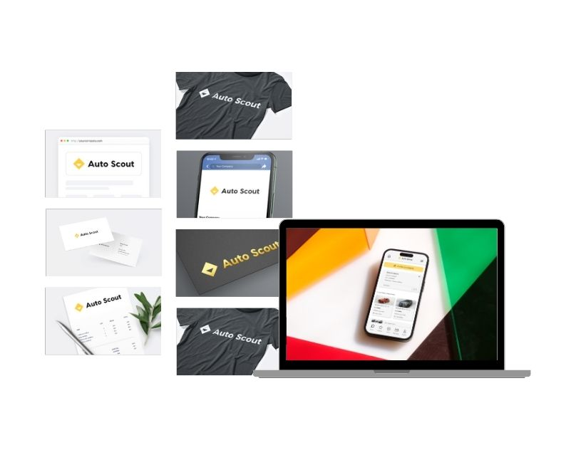
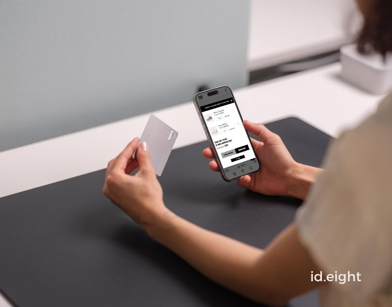

Product Designer UX/UI
From research to high-fidelity – turning user needs into business results.

Design System – Visual Foundations & UI Patterns
A structured and scalable design system built to ensure consistency, efficiency, and clarity across digital products. Includes a complete set of design foundations, ready to evolve into a fully documented library.
See Project

AutoScout24 Redesign – UX/UI Case Study
A complete redesign focused on solving real user pain points with a clean, scalable interface.
Includes user research, journey mapping, wireframes, and high-fidelity UI design.

Sneakers E-Commerce – UX Improvements & User Testing
Redesigned key UI flows for a sneakers website and validated improvements through real user testing.
Includes journey mapping, interface adjustments, and usability-driven design decisions.
Brands I’ve worked with